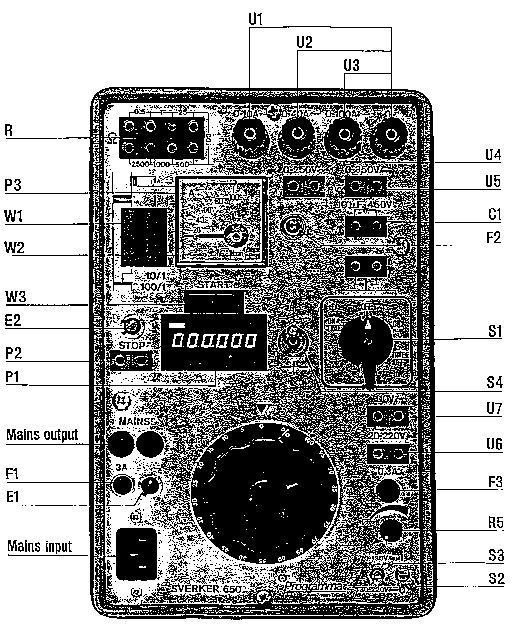
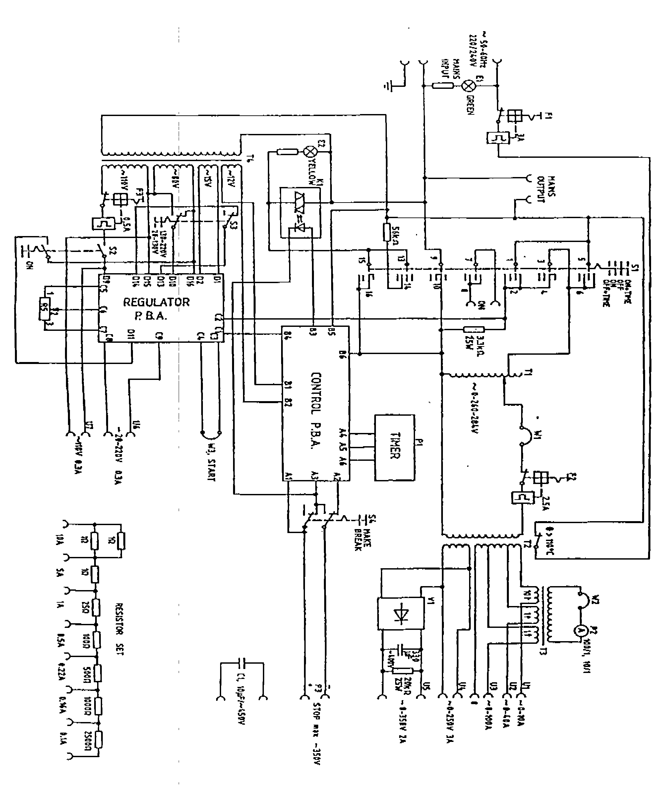

|
 |
|
Protection
|
Technical Procedure
|
|
|
Equipment
Relay Calibration
PROGRAMA |
Document
No: PC-003-r0 |
|
Issued
to:
Networks |
|
Status: APPROVED |
|
Procedure:
Using SEVERKER 650
(P1-Y1) |
Approved Date: 23
Dec 1996 |
|
Date to
be Reviewed: Dec 2001 |
Introduction
This
document details the testing procedures P1, required to completely check the
proper operation and calibration of the relay, to be carried out on an annually
bases as indicated by Y1 in the title block.
The SVERKER type 650 is a rugged portable
test set designed to provide all normal tests for voltage, current, power
and time relays. This set is especially well designed for testing current
transformers by easily performing CT ratio tests and plotting the
magnetization curves for CT's.
Safety Precautions
-
A work
permit must be issued, qualified maintenance staff carry the suitable safety
ID category,
-
Safety
fence with caution marks surrounding the work area is required,
-
Wear the safety and healthy
equipment
as safety shoes, safety helmet ..etc
When removing relays for bench testing ensure
that the CT secondary circuits are short circuited.
Ensure that injected test currents only supply the relay
under test.
Never leave the test set unattended when it is connected to
the supply.
Connect test leads only when the main switch S1 is in the
OFF position.
Work to be Carried Out
INDEPENDENT VOLTAGE TESTS
(Using the Voltage Set to check under-voltage (#27) and over voltage
(#59) relays.)
Under voltage relays are typically used where a decrease in
the normal voltage supply level triggers a protection event such as tripping,
reclosure or an alarm. In most cases, the relay operate time for an under voltage
condition is not critical. Consequently, this procedure details the simple steps
to determine the actual under and over-voltage calibration points. Use of the
timer is therefore presented as a separate section in this document.
INITIALIZATION for AC and DC VOLTAGE
TESTS
-
Check that the 4-position main power output switch S I is
turned to 'OFF'.
-
Rotate the large 'Fault Voltage' Adjustment knob to
the minimum voltage level (zero) by turning it to the fully counterclockwise (CCW)
position
-
Connect the test leads from the voltage coil of the
isolated relay under test to the SVERKER as per the following:
a- Use SVERKER terminals 0-250 VAC (U4) for all normal AC voltage tests.
b- For the special case of test voltages less than 10 volts
AC, connect the leads to the SVERKER terminals 0-100 Amps (U3).
c- For test voltage greater than 250 VAC, use (one) jumper
to connect the terminal (0) of 0-250 volt AC terminals in series with the
terminal (0) of Main Output' terminals.
d- Roughly regulated DC voltages can be obtained using the
same large voltage adjustment knob. Plug the test leads into the 0-350 VDC
(U5) terminals.
e- For accurate low power (less than 300 mAmps) DC relay
tests, check that the small DC On-Off switch (S2) is placed in the'OFF' (0)
position.
f- Rotate, the small DC voltage adjustment knob
(R5) to the minimum counterclockwise position.
g- Set the small DC switch (S3) to select either 20-130 VDC
(up position) or the 130-220 volts DC range (switch in the down position).
h- Connect the coil of the DC relay to be
tested to the SVERKER terminals 20-220 volts DC (U6)
-
Connect a separate (digital) voltmeter in parallel with the
leads going to the relay under test. Set the range switches on the voltmeter
to select the correct style of voltage (AC or DC) and the anticipated
operating range of AC or DC voltages.
-
The SVERKER test set can now be energized by plugging the
'Mains Input' cord into a normal 220 VAC wall outlet. The green (El) lamp
should now light to indicate that the power supply is alive.
TESTING UNDER
VOLTAGE
(#27) RELAYS
-
To check the
under voltage setting, energize the Test Set by
using the initialization procedure described above. Turn the 4-position
switch 'S F to the ON position.
-
Increase the voltage by turning the large 'Fault Voltage'
knob clockwise until the voltmeter indicates the normal operating voltage.
Slowly decrease the voltage until the under voltage relay drops out.
-
Repeat the above step three times to determine the average
drop-out value.
-
Record this
under voltage drop-out value on the maintenance
test sheet.
-
Complete this
under voltage test by turning the S I switch to
the OFF position.
TESTING OVER VOLTAGE (#59) RELAYS
-
To check the
over voltage setting, energize the Test Set as
described above, and then increase the voltage by turning the large 'Fault
Voltage' knob clockwise until the voltmeter indicates the normal operating
voltage. Slowly increase the test voltage above this point until the
overvoltage relay picks-up.
-
Repeat the above step three times to determine the average
pick-up value.
-
Record this
over voltage pick-up value on the maintenance
test sheet.
-
Complete this
over voltage test by turning the S 1 switch to
the OFF position.
DC VOLTAGE TESTS
-
Energize the Test Set as described in the Initial
Connections Section above.
-
Energize DC test source by flicking the DC control switch
(S2) to the ON position.
-
Rotate the small DC voltage adjustment knob (R5) clockwise
to increase the voltage until the relay operates. Note the operate value
using the digital voltmeter.
-
Repeat the above step three times to determine the average
operate value.
-
Record this operate value on the maintenance test sheet.
-
The pickup and dropout values of this DC relay can be
determined using tests similar to the undervoltage/overvoltage AC tests
described above.
INDEPENDENT CURRENT TESTS
(Checking instantaneous(#50) and timed (#51) over current relays.)
Initial Connections for Current Testing:
-
Turn the 4-position main power output switch S I to the
OFF position.
-
Rotate the large 'Fault Current' adjustment knob to the
minimum current level (zero) by turning it to the fully counterclockwise (CCW)
position.
-
Connect the test leads from the current coil of the
isolated relay under test to the SVERKER as per the following:
i) Use SVERKER terminals 0-10 Amps (Ul) for test currents up
to 10 amperes.The test leads should be connected to terminal 0- 10 A and
terminal post 0.The analog meter range, will automatically be set to read 0
to 10.0 Amps.
ii) Use SVERKER terminals 0-40 A (U2) for currents between
10-40 amperes. Use test lead terminals 0-40 A and terminal post 0 for
connections. The full-scale analog meter range will automatically read 0 to
100 Amps.
-
If more accurate ammeter readings are desired, remove the
W2 jumper plug directly to the left of the SVERKER analog meter and connect
an accurate (digital) ammeter in series with the holes for the W2 jumper
plug. This optional meter will read 1/10 of the total current for 0-10 A
tests and willl read 1/100 of the total current for both the 0-40 A and 0- 1
OOA tests. Note: If an optional ammeter is not used, the shorting plug W2
must always be plugged in for all current tests.
-
Special relays, which have non-linear impedance, may
cause waveform distortion of the test output current. Proper testing of
these relays can be obtained by placing as much resistance as possible in
series with the primary winding of the main output transformer. For this
particular case, remove the W1 jumper plug which is to the left of the W2
plug, and insert the resistance in series. Isolated resistor set (R) located
at the top left comer of the test instrument can be used for this purpose.
-
Energize the SVERKER test set by plugging the "Mains
Input" cord into a 220 VAC wall outlet. The green (El) lamp will light
to indicate the test equipment is alive.
TESTING INSTANTANEOUS OVER
CURRENT RELAYS
-
Energize the output current circuit by turning the
4-position (S 1) selector switch ON.
-
Gradually increase the test current by rotating the large
Current Adjustment knob in a clockwise direction, until the relay picks up.
If the relay does not pickup, then return the knob to its, fully
counterclockwise minimum position and turn switch S 1 OFF. Then move thei
test leads to the next higher current range terminals and repeat the test.
-
Once the relay, picks-up, turn switch S I OFF and then
ON. The relay should again pickup. If not, slightly increase the test
current to measure true instantaneous current.
-
Repeat this test three times and record the
instantaneous current operate value on the relay maintenance sheet.
TESTING TIMED OVER CURRENT (#51) RELAYS
General: Normally, two types of tests are performed to
check inverse time over current relays. These are the the basic minimum pick-up
test and then several (3 to 5) time tests are performed at various current
levels to determine the relay operate time for ~ various levels of fault
currents. Definite time relays should be checked at their normal time and
current setting values only.
-
Follow the same initialization procedure as outlined before
for instantaneous relays.
-
Rotate the Current Adjustment knob until the relay disk
just begins to rotate, or the contact just begins to leave the backstop and
note this value.
-
Repeat the above test three times to Determine the
average Minimum Pick-up value of the relay and record this value on the
maintenance sheet.
-
Determine the normal operating range of the relay and select
(3 to 5) test currents to2D , check the relay timing characteristics.
(Refer to the manufacturer's test curves for comparison to the test
calibration curves.)
-
Energize the Test Set as previously described and adjust
the test current to the desired calibration level.
-
Turn the 4-position selector switch (S 1) to the ON
position and adjust the current to the desired test level. Leave the Current
Adjust rheostat at this setting.
-
Disable the test current by turning the S I selector switch
OFF. Measuring a Timed overcurrent Setting:
-
Verify that the W~3 shorting plug has been plugged into the
SVERKER test set. This arrangement allows the timer to start once the (Sl)
selector switch is turned to the ON + Time position and the current is
flowing to the relay under, test.
-
Set the stop selector switch (S4) to the normally open
(up position) or normally closed (down position) to agree with the normal
condition of the relay trip contacts before the relay under test operates.
-
Using the manufacturer's drawings, connect the
"trip" contacts from the relay to the STOP (P2) terminals of the
SVERKER test set.
-
Rotate the SI selector switch to the ON + TIME position.
The timer will start and the relay contacts should stop the timer. At this
time the yellow signal lamp should light to indicate that the relay has
operated. The test set will automatically disconnect the test current flow
to the relay. Turn switch S 1 OFF and reset the timer display.
-
Repeat the test to determine the average timed pick-up
point for this current level and record the test current value and the relay
operate time on the maintenance sheet.
-
Repeat the steps above using other appropriate current
levels and compare all results of these time curves to the manufacturer's
data sheet for the relay.
Power (IMPEDANCE) RELAY TESTING
Calibration of Impedance (#21) and Directional overcurrent
(#67) Relays
NOTE: This test set is only capable of checking the pure
impedance or circle characteristics of power relays since a phase shifter is not
part of this equipment. In addition to this, ~ only relays with voltage coils
rated for 110- 125 volts can be tested.
-
Follow the same initialization procedure as for the current
and voltage relays.
-
Connect the relay under test to the appropriate current
output terminals as described in the current testing section of this
document.
-
Set the small selector switch (S2) to the off (0) position.
-
Connect the potential coil of the relay to to be tested to
the 110 VAC (U7) terminals.
-
Place the selector switch S2 in the ON (1) position to
energize the relay potential coil.
-
Gradually increase the large' Current Adjustment' knob until
the relay operates.
-
Record the average voltage and current values at which the
relay operates.
-
Calculate the Impedance point on the maintenance sheet.
Remember that the impedance of the line equals the relay coil voltage
divided
by the relay operate current or Z = V/ I.
Note 1: If the relay fails to operate, turn off the test set
and interchange either the current,
or voltage test leads to shift the
polarity of one of the relay sources.
Note 2: If the power relay under test is a reactive style of
relay, then a single jumper wire should be used to
connect the current test
circuit in series with the 10 uF, 450 volt capacitor (C 1) located on the
SVERKER test set.
This will create the necessary 90-degree phase shift to
allow the relay to operate.
Note 3: If the voltage coil requires less than 110
vac, then
the independent resistor set can ibe used to drop the voltage
imposed across
the relay coil. In this case connect 110 vac (U7) across several of the
resistors (R) on the SVERKER
and using connecting leads with standard banana
plugs, tap off the required voltage to the relay coil.
TIME MEASUREMENTS
General:
-
The SVERKER TIMER can be used independently of other tests
for accurate timing of events to within one millisecond.
-
Power is supplied to the timer circuit via the S 1 switch
when this switch is placed in the 'ON + TIME' or 'OFF + TIME' position.
-
The small 2-position (S4) switch should be set in the up
position for normally open (N.O.) stop contacts, and in the down position
for normally closed (N.C.) stop contacts. Remember that these N.O. and N.C
positions refer to the normal position of the relay stop contacts before the
relay operates.
Timer Inputs & Outputs
The timer can be started or stopped by the application of dry
contacts or the presence of a DC voltage in the range of 3 to 350 volts DC.
Note: The timer will not operate correctly if the polarity of this applied DC
voltage is reversed.
The timer can be started by the closure of a dry contact
connected across the (W3) start terminals (after removing the jumper plug), or
by the application of a DC voltage as described previously. When starting the
timer externally, the SI switch must first be placed in the " ON + TIME
" or " OFF + TIME " position. When using the internal circuitry
of the SVERKER test set to activate the timer, the W3 jumper must always be
installed.
Similar to starting, the timer can be stopped by a dry contact
closure or the application of a DC voltage across the (P2) timer stop terminals
of the SVERKER.
When the timer is stopped, the current/voltage output circuit is
interrupted (opened) and the yellow signal lamp (E2) comes on to indicate the
trip circuit has operated. For continued measuring, the main switch (S 1) has to
be reset to the " 0 " position. If the tripping circuit is connected
and the S I switch is set to the "ON" position, the yellow signal lamp
is turned on when the operating value is obtained without interrupting or
breaking the current to the relay being tested.
Time Measurement of over current and
over voltage Relays
-
Connect the current and voltage circuits as previously
described.
-
Connect test leads from the SVERKER (P2) terminals to the
stop contacts of the relay under test.
-
Set switch S1 in the "ON" position and increase
the current/voltage to 25-50% over the normal operating value of the relay
being tested and leave the variable transformer rheostat in that position.
-
Reset the main S I switch to the OFF position.
-
Reset the digital timer display by pressing the small black
button located in the upper left corner of the display.
-
Adjust the stop timer make/break switch (S4) to the normal
(non-operated) position of the relay stop contacts.
-
Set the switch to the ON + TIME position. The relay will
operate and the timer should now measure the relay (pick-up) operation time.
-
Record this pick-'up value on the relay maintenance sheet.
Time Measurement of under current and
under voltage relays
-
Connect the current and voltage circuits as previously
described.
-
Adjust the stop timer make-/break switch (S4) to agree with
the normal (non-operated) position of the relay stop co.
-
Connect test leads from the SVERKER (P2) STOP terminals to
the stop contacts of the relay under test.
-
Set test switch S I in the ON position and increase the
current, voltage until the relay operates. Leave the variable transformer
knob in this position.
-
Reset the digital timer display by pressing the small black
button located in the upper left comer of the display.
-
Set the main S 1 switch to the OFF + TIME position. The
relay will de-energize and the timer should now measure the relay (drop-out)
operation time.
-
Record this drop-out value on the relay maintenance sheet.
If desired, the independent, normally open contact located above
the main S I switch can be wired to simultaneously start other timers or test
equipment when the S1 switch is selected, to the "ON" or ON + TIME
positions
ATTENTION:
The W2 terminals of the SVERKER must always be short-circuited
when the current circuit is energized. This can be accomplished either by
using the supplied short-circuiting plug, or by connecting an external ammeter
to these terminals.
SVERKER Test Set Protection
The output transformer is protected by a thermal contact. If
this thermal contact trips, the display of the timer will go out. The thermal
contact will automatically reset by itself when the internal temperature of
the instrument decreases or drops.
The (U6) output is provided with over-current protection that
will automatically break or interrupt the ouput circuit in case of an
overload. This protection will reset if the S2 switch is switched
"OFF" for approximately 30 seconds.
The Sverker relay testing unit is electrically fully isolated
and automatic fuses are used for all measuring ranges, except for the mains
output.
The set of resistors is not connected internally with the rest
of the relay-testing unit.


Terminals
Unloaded
Ul
0-10A
85
-90V
AC Settable with TI
U2 0-40
A
25-
27V
AC Settable with TI
U3 0-100
A
10.0-
11.0v
AC Settable with T1
U4 0-250V.3 A
250-270V
AC Settable with TI
U5
0-350V,2A
350-370V
DC Settable with TI
U6
20-220V
DC Settable with R5
F1 Automatic
fuse for for the mains voltage
F2 Automatic
fuse 2.5A
F3 Automatic
fuse 0.5A
El Green
indicating for the mains voltage
E2 Yellow signal
lamp in the trip circuit
P1 Electric
timer independent of mains frequency.
Measuring range 0- 999,999 sec. Accuracy 0,002%of readout +0,-2ms
P2 Input for
stop of the timer
P3 Ammeter class
1~.5
Cl Capacitor
10,uF/450V AC for reactive power relays
St Head switch
S2 On/off switch for
terminals U6 and U7
S3 Selector
voltage range terminal U6
S4 Make/ break
switch for timer
R5 V01tage
adjustment terminalU6
wl Terminal for
connection of a resistor on the primary side of the output transformer
w2 Terminal for
an external ammeter .
w3 Terminal for
external start and stop of timer.
The voltage is stabilized and variable in
two steps with the switch S3.
Characteristics at input voltage 220v AC±10%.
Ripple (peak to peak) max 4 %
Load regulation 3%
Line regulation less than 4%
U7 110v, 0.3A
110-125 AC